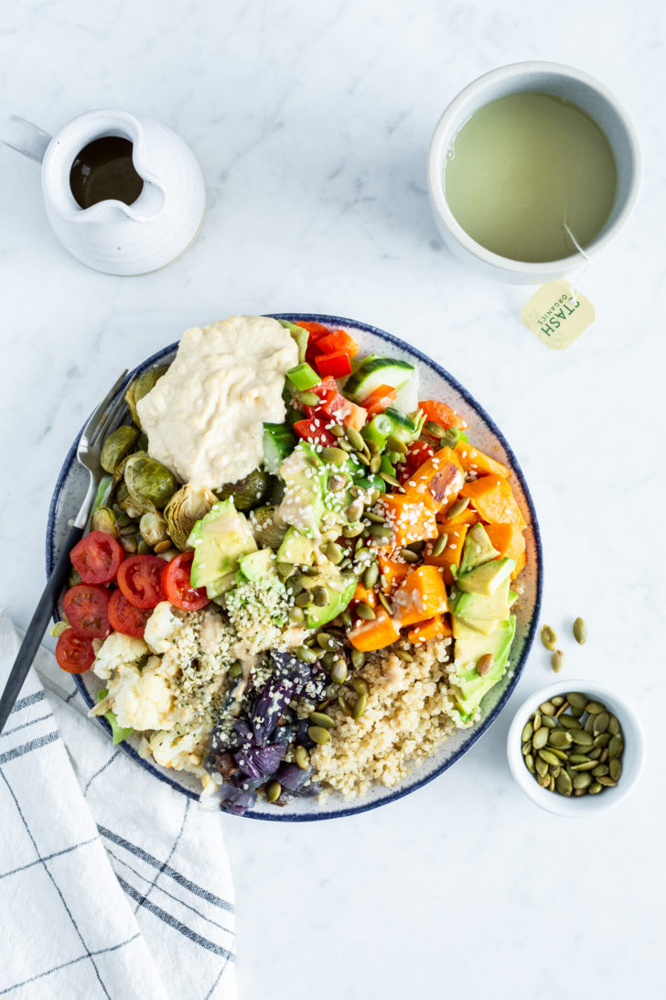

Week Long Power Bowls

Description
I eat grain bowls all the time, and this looks like a really good one! It has a lot of nutritious ingredients with a wide variety of flavors and textures, and it looks very healthy and filling.
Ingredients
For the Roasted Veggies:
- 3 small (680 g) sweet potatoes, peeled and chopped (4 cups)
- 4 cups (500 g) brussels sprouts, trimmed and halved*
- 1 medium (800 g) cauliflower, chopped into small florets (4 heaping cups)
- 1 medium (230 g) red onion, peeled and chopped
- 2 large (500 g) red bell peppers, seeded and chopped
- 3 tablespoons (45 mL) extra-virgin olive oil, divided
- Salt and pepper, to taste
For the Quinoa:
- 2 cups (400 g) uncooked quinoa**
For the Fresh Veggies:
- 1 medium (370 g) English cucumber, chopped
- 1 medium (135 g) bunch green onions, chopped
- 2 cups (255 g) grape tomatoes (1 dry pint)
Instructions
- Position two oven racks near the middle of the oven. Preheat the oven to 400°F (200°C) and line two extra-large (15- x 21-inches) rimmed baking sheets with parchment paper. It’s important to use extra-large baking sheets so there’s enough room for all those healthy veggies.
- Divide the chopped, “to-be-roasted” veggies onto the baking sheets. Drizzle 1 1/2 tablespoons of oil over top each sheet and toss the veggies until they’re fully coated in the oil. Sprinkle generously with salt and pepper.
- Roast the veggies for 30 to 40 minutes (I find 35 minutes is perfect in my oven for lightly charred veggies) until fork tender and golden. There’s no need to rotate/move the pans or flip the veggies halfway through baking unless you’re particular about even cooking.
- While the veggies are roasting, add the quinoa to a large pot along with 3 1/2 cups (875 mL) water. Stir. Bring to a simmer over medium-high heat, then immediately reduce the heat to low-medium, cover with a tight-fitting lid, and cook for 12 to 14 minutes, until the water is absorbed and the quinoa is fluffy. Remove the lid and fluff the cooked quinoa with a fork.
- While the quinoa cooks, chop the cucumber and green onions. Rinse the tomatoes (I hold off slicing them until just before serving).
- Remove the roasted veggies from the oven. Once mostly cool, transfer all of the veggies and quinoa into containers, seal with airtight lids, and place into the fridge for up to 4 days.
- To make the power bowls: Add a couple generous handfuls of chopped lettuce/greens to the bottom of a large shallow bowl. Drizzle with a bit of dressing and toss the lettuce/greens until coated. Top with spoonfuls of your prepped food (quinoa, roasted and fresh veggies)—I always warm up the quinoa and roasted veggies first! Now, add diced avocado, more salad dressing, cooked beans or lentils, nuts and seeds, and hummus or pesto. Keep the power bowl flavours interesting by changing up the toppings each day!
Note: This website is strictly intended as a project for learning web development. The recipe above was copied from Oh She Glows, and the owner of that site retains copyright to all images and intellectual property contained herein.